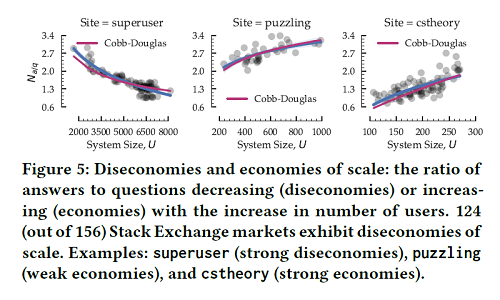

Sustainability of Social Media Platforms: An Economic Perspective
In an information-rich world, the wealth of information means a dearth of something else: a scarcity of whatever it is that information consumes. What information consumes is rather obvious: it consumes the attention of its recipients. Hence a wealth of information creates a poverty of attention and a need to allocate that attention efficiently among the overabundance of information sources that might consume it. — Simon, H. A. (1971)
Case Example

Diseconomies/Economies of Scale in CQA Platforms: The ratio of answers to questions decreasing/increasing with the increase in number of users. Examples: strong diseconomies—SUPERUSER; weak economies—PUZZLING; and strong economies—CSTHEORY. Most StackExchange platforms exhibit diseconomies of scale.
About
Content (post, comment, blog, wiki, photo, video, etc.) production and subsequent consumption is a key part of the social web experience. Every second, on average, several thousand tweets are tweeted on Twitter, which corresponds to several hundred million tweets per day and several hundred billion tweets per year. The content generation stats are in similar scale for other massive social media platforms such as Facebook and YouTube. We continue to witness the post-Web 2.0 era in the light of these social media platforms, where content production and consumption are the core processes that keeps the platforms alive by serving nowness in the social web experience.
While content production and consumption are core processes that drive the social media platforms, our understanding of these processes and their relationship is yet limited. For example–What factors drive the production and consumption process in a social media platform? Is it simply user participation, implying participation of more users lead to more production and consumption? Given that the users have limited time and they are distributing their time across production and consumption activities (e.g., a Facebook user may distribute his/her time over writing his own posts and reading posts from friends), what can be inferred about the relationship between production and consumption? Further, if users are investing most of their time in consumption activities (say reading posts), or conversely, in production activities (say generating posts), how does it affect the platform's sustainability, i.e., future production and consumption?
To date, sustainability of social media platforms has been studied mainly from the perspective of growth dynamics, with researchers emphasizing interacting population based models to explain user growth in these platforms. These models, however, only concentrate on the interaction among users, and pay little attention to the interaction between users and contents, specifically lacks attention in production and consumption. There is a recent body of empirical studies that analyze patterns of user content production to reveal useful insights. However, even with these insights, there is a "gap" in understanding the factors of production and consumption, and their relationship. What is missing from the picture is explanatory models that clearly establish the relationship between production (or consumption) and associated factors. Developing such models is important for understanding the content production and consumption proceses, predicting future production and consumption, and identifying platforms that will sustain for a long period of time without burning out.